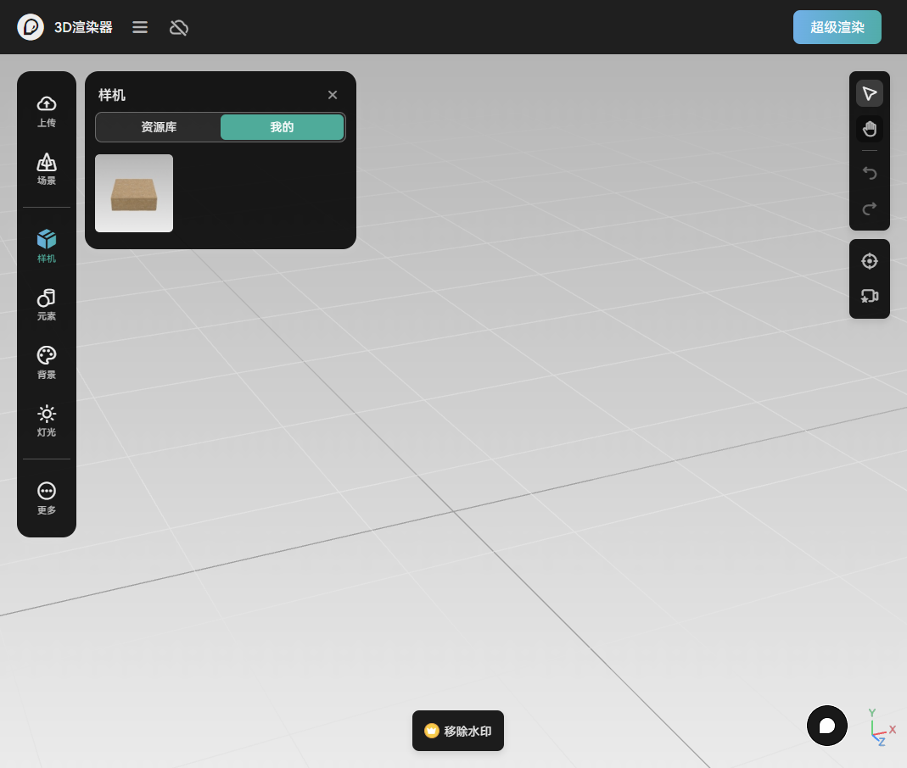
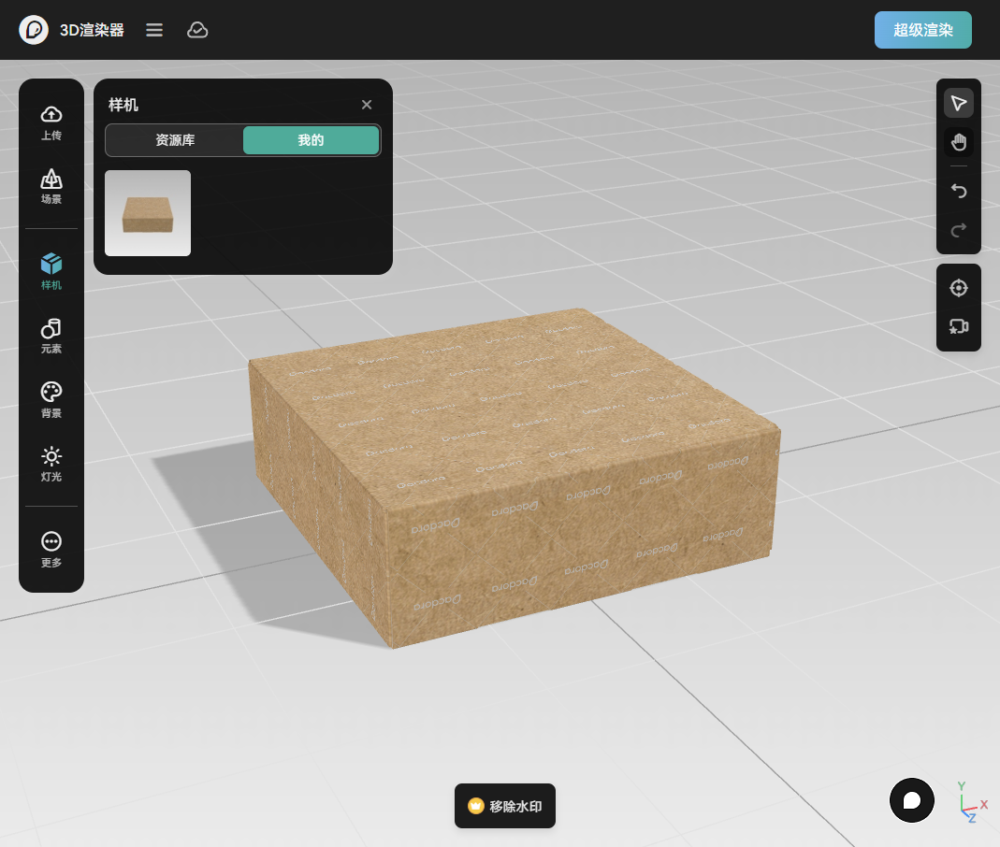
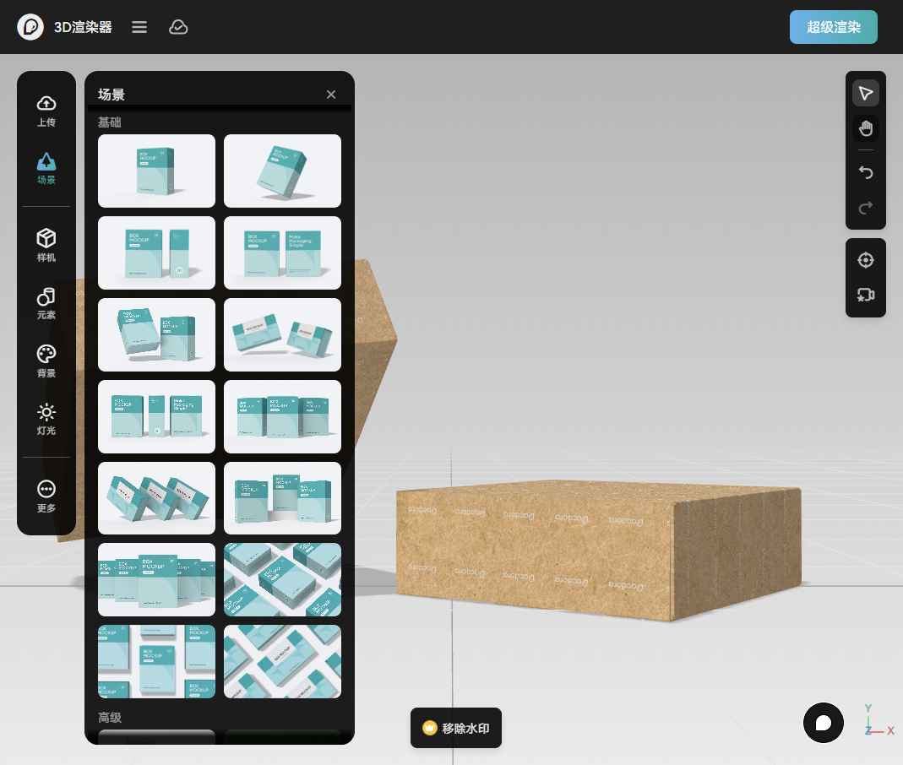
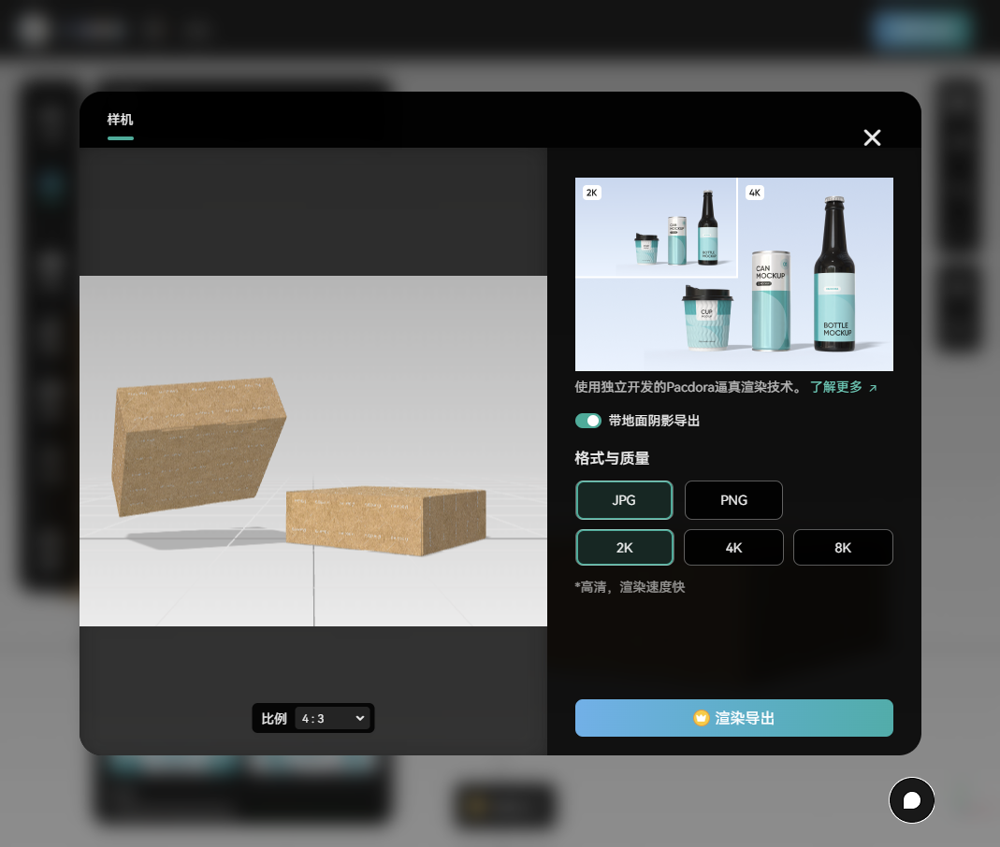
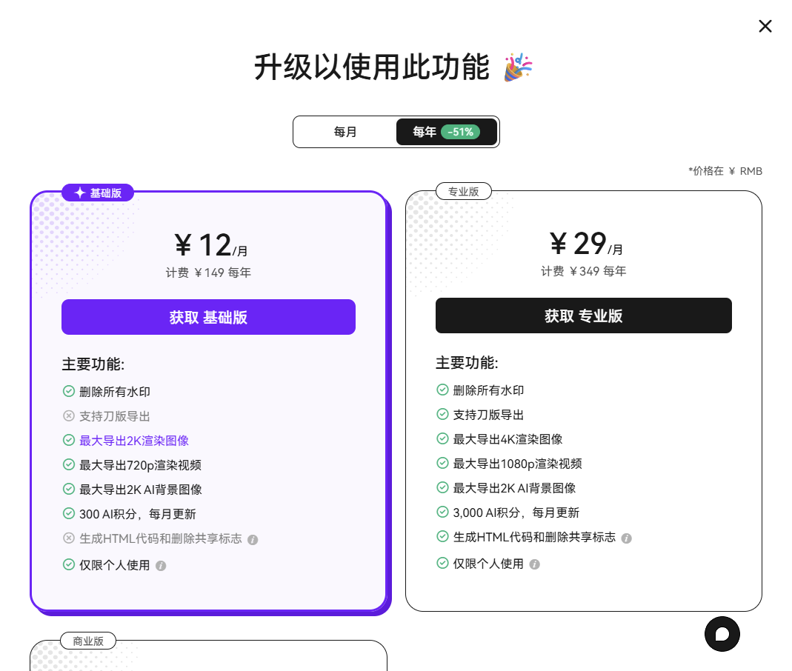

一句话结论
浏览器里是普通的 Three.js 光栅化预览；“超级渲染”是把整个场景序列化成 JSON 交给服务端做光线追踪出图。场景本身是一份可存档的 JSON（相机、太阳光、HDR 环境光、每个模型的位置/缩放/PBR 材质、背景、输出尺寸），每次操作自动 PUT 到 /simplerender/{renderId}。包装盒模型不是预制的，仍然是“刀版 JSON → knife2gltf WASM → glTF”实时生成，和刀版生成器共用同一条链路。
场景怎么存
一个场景 = 一条 simplerender 记录（renderId 如 irfbck4org，写进地址栏 ?id=），内容是 config JSON（版本 4.1.1）。改动即自动保存。
盒子从哪来
每放一个盒子就复制一份工程（POST /projects project_type:3），再取刀版 JSON 和 blanks/setting（材质/相机预设），用 knife2gltf WASM 生成 3D。
预览怎么画
自研封装 pacdora-3d 包（约 2MB）基于 Three.js WebGLRenderer：阴影贴图、4×MSAA 渲染目标、交互时降到 0.5 倍像素比保流畅。
高清图怎么出
2K/4K/8K 默认走服务端：上传预览截图做封面 → POST /image/render/bray 提交 d3_params（含光线反弹次数 bounces:3）→ 进导出任务队列。另有一个隐藏的“本地 4K 截图”档。
入口与页面
观察 /3d-creator 是 SEO 落地页（“在线免费 3D 渲染器”），页面上 7 个「开始 3D 设计」按钮里 6 个指向 /3d-modeling（target="_blank"），1 个指向 /mockups。落地页自身用一个轻量库 cdn.pacdora.com/Pacdora-tiny-3d-v0.0.16.js 加载一个 glTF 做首屏 3D 展示（控制台打印“加载模型 → Loading model resources 12.5%…100% → 加载模型完成”）。
观察 /3d-modeling/ 是独立的 Vue 3 单页应用，入口 /_pacui/assets/zh-CN/render/index-*.js，页面标题“Pacdora | 3D渲染器”。界面：左侧「上传 / 场景 / 样机 / 元素 / 背景 / 灯光 / 更多」，中间 3D 画布（带地面网格和坐标轴），右侧「选择 / 平移、撤销 / 重做、聚焦、视角」，顶部「超级渲染」，底部「移除水印」。


整体架构
models/ctree、空白模型 models?type=blank、材质效果、元素、HDRpacdora-3d 引擎：摆放、灯光、背景、相机、撤销重做PUT /simplerender/{id}/image/render/bray 或本地截图前端分包 观察
| 分包 | 体积 | 作用 |
|---|---|---|
pacdora-3d-*.js | 2.0MB | 自研 3D 引擎：渲染器、场景、相机、灯光、地面阴影、模型组、快照、场景 JSON 序列化；内含 knife2gltf 胶水和 SVG 曲线解析（曲面盒） |
three-*.js | 590KB | Three.js（控制台提示“Multiple instances of Three.js being imported”，pacdora-3d 里还打了一份） |
pacdora-editor-*.js | 300KB | 通用编辑器 UI 组件 |
index-afef….js | 58KB | 3D 渲染器页面主体：视角管理、超级渲染弹窗、导出流程 |
useProject-*.js | 8KB | 场景记录 CRUD（simplerender）、官方模板、场景对象分类（模型 / 元素 / 组） |
useLight / useBackground / useModels / useToolModels | 小 | 灯光、背景、模型库、空白模型设置 |
resolutionEffect / Mockup / ExportDialog / render | 小 | 分辨率表、导出面板、提交云渲染 |
aliyun-oss-sdk / aws-sdk | — | 封面图与上传素材直传对象存储（国内阿里云，海外 AWS） |
启动加载链路（访客，REA 抓包）观察
| # | 请求 | 用途 |
|---|---|---|
| 1 | GET /api/v2/users/experience_user | 访客分配体验用户（登录用户为 users/check） |
| 2 | GET oss.pacdora.cn/frontend/web-assets/c6d6…json | 编辑器静态配置（OSS 上的 JSON） |
| 3 | GET /api/v2/render/view/list | 用户保存的相机视角列表 |
| 4 | GET oss.pacdora.cn/frontend/web-assets/abfe….hdr | 默认 HDR 环境贴图（图像照明） |
| 5 | GET /api/v2/simplerender/official/model/template | 官方场景模板列表（基础 / 高级） |
| 6 | GET /api/v2/models/ctree?mockup=true、/material_effect | 样机分类树、材质效果（烫金、UV 等） |
| 7 | GET /api/v2/models?type=blank&mockupNameKey=square-box-mockup | 资源库默认展示的空白模型 |
登录用户还会请求 /projects?type=mockup-detail（「我的」样机）和 box/export/task/record（导出任务）。访客完整进入编辑器约 6 秒，期间未见报错。
把盒子放进场景（登录态实操）观察
| # | 请求 | 要点 |
|---|---|---|
| 1 | POST /projects {"project_id":47164033,"project_type":3,"type":"mockup"} | 以“我的”里那个盒子为母本复制一份新工程（47665795），场景里改材质不会污染原工程 |
| 2 | GET /projects/info → GET /project/knife?bleed=3&export_type=project&id=… | 取工程与刀版 JSON（盒型 AircraftNewThree，cate 15001103） |
| 3 | GET /blanks/setting/29908 | 该盒型的“空白样机设置”：材质 KRAFT、推荐相机、每层内外表面 PBR 参数、HDR、光照模板 Daylight、贴图布局 |
| 4 | GET oss.baoxiaohe.com/…/knife2gltf/1.1.8/knife2gltf.min.wasm | 与刀版生成器同一个 WASM，把刀版转 glTF |
| 5 | GET /simplerender/official/model/template?modelNo=15001103 | 按盒型筛选可用的场景模板 |
| 6 | POST /simplerender {config:{…}} → PUT /simplerender/irfbck4org/name {"name":"无标题模型"} | 首次放入模型时才创建场景记录，地址栏变为 ?id=irfbck4org |
观察 期间还调用了 GET /home/sts 获取阿里云 OSS 临时凭证（用于上传缩略图，凭证值未记录）。
场景数据结构（simplerender.config）观察
由 pacdora-3d 引擎的序列化方法生成（缺少工程 id 或 HDR 路径时会抛 miss project id / miss envLightPath）。实测请求体节选：
{
"version": "4.1.1",
"sceneSrc": { "blender": "", "glb": "" }, // 预留：外部场景文件
"background": "transparent", "color": "", "image": "",
"camera": { "fov": 30, "focus": 10, "aspect": 1.27,
"position": {x,y,z}, "direction": {x,y,z} },
"sunLight": { "color": "#ffffff", "intensity": 0.46, "radius": 3, "visible": true,
"position": {x,y,z}, "userData": { "position": { "radius": 500, "phi": 0.785, "theta": -5.50 } } },
"envLight": { "envUrl": "https://oss.pacdora.cn/hdr/b9f6….hdr",
"envMapIntensity": 1.194, "rotation": 0.546, "envMapOpen": true },
"bounces": 3, // 光线反弹次数（给云端光追用）
"groups": [{ // 场景里的每个模型
"type": "project", "typeId": 47665795, "current": 100, // 折叠进度 100 = 闭合
"position": {x:0, y:-7.4, z:0}, "rotation": {_x,_y,_z,_order:"XYZ"},
"scale": {x:50, y:50, z:50},
"material": { "traditional": {
"outside": { "color":"#fefefe", "roughness":0.8, "metalness":0.1, "ior":1.5,
"normalScale":{x:0.15,y:0.15}, "clearcoat":0, "sheen":0, "transmission":0,
"userData": { "name":"外侧面", "faceIndexTexture": {…} } },
"inside": { …"name":"内侧面"… } } },
"userData": { "box3": { "min":[…], "max":[…] } } }],
"planeY": -10, // 地面高度
"combines": [], "xYZCombine": [], "xYZGroup": [], "hierarchicalModelGroups": [],
"userData": { "backgroundType": "gradient",
"gradient": { "direction": 180, "colors": [{"color":"#B5B5B5","step":0},{"color":"#EBEBEB","step":1}] } },
"ratio": { "w": 1, "h": 1 }, "size": { "w": 1920, "h": 1920 }
}
- 材质是 Three.js
MeshPhysicalMaterial的参数直存：粗糙度、金属度、折射率、清漆、光泽、透射、法线强度都在里面，盒子按“图层 × 内/外侧面”分开设置。 faceIndexTexture：一张按面编码的索引贴图，用于鼠标悬停时高亮单个面（highLightAlpha 0.12）。- 场景对象分类（
useProject）：Project（包装模型）、Base/Decorator（元素：底座、植物等道具）、Group/TempGroup（组合）。 - 光照模板：
blanks/setting里带lightTemplateName:"Daylight"，「灯光」面板切换的是太阳光 + HDR 的预设组合。
场景模板（「场景」面板）观察
点击一个官方模板后的请求：
GET /simplerender/official/template/2550：返回与 config 同格式的 params（相机、比例 4:3、输出 1024×768、模型位 groups）POST /projects project_type:3，用你的盒子复制一份填进去PUT /simplerender/irfbck4org 写入整份新 config即：模板 = 一份预设好的场景 JSON，其中的模型是“占位工程”；套用时把占位换成用户自己的工程副本，相机、灯光、背景、摆放角度全部沿用模板。

实时预览渲染器 观察
来自 pacdora-3d 包内渲染器类（已去混淆描述）：
renderer = new THREE.WebGLRenderer({
antialias: true, alpha: true, precision: "highp",
preserveDrawingBuffer: true // 便于随时截图（快照导出）
})
renderer.shadowMap.enabled = D3.useShadow // 阴影贴图（类型常量已混淆）
// 可选：4×MSAA 离屏渲染目标 + 全屏三角形输出
renderTarget = new WebGLRenderTarget(w*dpr, h*dpr, { samples: 4, stencilBuffer: true })
setPerformanceFirstOrEffectFirst(mode) // "performance" 时像素比降到 0.5，交互流畅
renderFloor() // 先只画地面（过滤掉 MeshPhysicalMaterial）
renderModel() // 再清深度、隐藏地面和背景单独画模型
renderHelpers() // 最后画选择框、变换手柄（模板缓冲遮罩）
setBounces(n) // 只记录数值，预览本身不做光线追踪
- 预览是光栅化 + 阴影贴图 + HDR 环境光，不是浏览器端路径追踪。
bounces只保存在场景里，交给云端渲染使用。推断 - 监听
webglcontextlost / restored，上下文丢失时上报当前模型数量（多模型场景显存压力大）。 - 盒子模型仍由 knife2gltf WASM 生成（参见刀版报告）；曲面盒的刀版路径用 Three.js
SVGLoader解析d属性、按 50 段采样成曲线。
超级渲染 / 导出 观察

分辨率表（resolutionEffect）
| 档位 | 16:9 宽度 | 走向 |
|---|---|---|
| 2K | 1920 | 服务端渲染 |
4K（本地，hidden:true） | 3840 | 浏览器截图：snapshot({width}) 直接下载 Render_Mockup_宽_高_日期.jpg；界面上隐藏 |
| 4K | 3840 | 服务端渲染 |
| 8K | 7680 | 服务端渲染 |
9:16、4:3、1:1 等比例按同样规则换算宽高（高 = 宽 ÷ 比例）。
服务端渲染提交流程（源码）
onRender(resolution, exportWithShadow):
await checkPermission(`exportImage_${label}`) // 无权益 → 弹付费窗并中止
if (resolution.localExport) { // 隐藏的本地 4K
png = engine.snapshot({ width }, format); download(png)
} else {
cover = await uploadToOSS(engine.snapshot(), "render-cover")
d3Params = await buildRenderParams(ratio, size, exportWithShadow)
POST /api/v2/image/render/bray (timeout 60s) {
d3_params: JSON.stringify(d3Params), size: "3840*2160",
payFlag: `render-detail-${renderId}-png`, sceneTemplateId,
render_id, thumbpath: cover, file_format: "jpg" | "png", origin: "render"
}
→ 关闭弹窗，进入导出历史 / 任务队列（box/export/task/record 轮询）
}
推断 云端渲染器拿到的就是上面的场景 JSON（相机 + 灯光 + HDR + 模型 + PBR 材质 + 反弹次数），在服务器上做光线追踪出图，因此效果比预览更真实，且不吃用户显卡。官网 FAQ 也写明“所有渲染任务均在云服务器上完成”。接口名中的 bray 与 config 里预留的 sceneSrc.blender 暗示服务端可能基于 Blender（Cycles）类引擎，未证实。
付费门槛 观察
GET /users/permissions 返回各档权益（节选）：
| 档位 | 相关权益 |
|---|---|
| free（0） | renderMockup_2K、exportAIBackground_1K |
| lite 基础版（1） | exportImage_2K、exportVideo_720P、removeWaterMark… |
| pro 专业版（2） | + exportImage_4K、exportDieline、renderMockup_4K、generateCode… |
| business 商业版（3） | + exportImage_8K、exportVideo_2K… |
3D 渲染器检查的是 exportImage_*，免费档没有，所以无订阅账号点「渲染导出」（2K JPG）时只发出 pay/unified/recent/order 和 seo/info?id=303（付费弹窗内容），未发出 /image/render/bray。套餐价格来自 /pay/unified/cn/plans：基础版 ¥149/年、专业版 ¥349/年或 ¥59/月、商业版 ¥599/年或 ¥99/月。

/image/render/bray。云端渲染的实际耗时、任务状态报文、输出图质量与水印、服务端是否二次校验权益，均为 未知。接口清单（静态提取 + 运行时观察）
| 领域 | 接口 | 说明 |
|---|---|---|
| 场景 | POST /simplerender | 新建场景，返回 renderId |
GET|PUT /simplerender/{id} | 读取 / 自动保存场景 config | |
PUT /simplerender/{id}/name、POST /simplerender/{id}/copy | 改名、复制场景 | |
| 模板 | GET /simplerender/official/model/template[?modelNo=] | 官方模板列表（可按盒型过滤） |
GET /simplerender/official/template/{id} | 模板详情（场景 JSON） | |
| 视角 | GET /render/view/list、POST /render/view、PUT|DELETE /render/view/{id} | 保存的相机视角（有数量上限） |
| 模型 | GET /models/ctree?mockup=true、/models?type=blank、/models/details、/models/image_search | 样机分类、空白模型、详情、以图搜模型 |
GET /blanks/setting/{id} | 空白样机的 3D 预设（材质、相机、灯光） | |
| 工程 | POST /projects（type 3）、/projects/info、/project/knife | 复制工程、取刀版 → 生成 3D |
| 背景 | /project/render/bgimage | 背景图 |
| 出图 | POST /image/render/bray | 提交云端渲染 |
GET /box/export/task/record、POST task/{read|retry|cancel} | 导出任务队列（与刀版导出共用） | |
| 其他 | /home/sts、/material_effect、/users/permissions、/pay/unified/* | OSS 临时凭证、材质效果、权益、支付 |
均带前缀 /api/v2。
对 BOXCRAFT 的启示
1. 场景即 JSON
相机、灯光、HDR、模型变换、PBR 材质全部可序列化，存档、模板、云渲染共用一份数据。我们若做效果图编辑器，应先定场景 schema，再做 UI。
2. 模板 = 带占位模型的场景
运营只需摆好场景存成模板，用户套用时替换占位模型即可，成本低、可批量产出“场景库”。
3. 预览与出图分离
浏览器只做够用的光栅化预览（交互时降分辨率），高质量出图交给服务端。我们现阶段用 Three.js 截图导出即可，真实感要求上来后再接云端光追。
4. 复制而非引用工程
放进场景的盒子都是工程副本，场景里改材质不影响原刀版工程；代价是工程表膨胀，需要清理策略。
5. 自动保存 + 懒创建
首次放入模型才建记录，之后每次改动整份 PUT。简单可靠，但 config 体积大时应考虑节流或差量。
6. 门槛按分辨率切
权益 key 形如 exportImage_2K/4K/8K，前端按 key 判断、后端按 payFlag 计费。我们做付费功能时可沿用“权益 key + 服务端校验”的结构。
证据与局限
REA Evidence
| Evidence ID | 内容 |
|---|---|
ev_4c81b4c22a8d1e7174a446429a69b5870e5b1e0293f0eb9f6080a569f79cae3c | 浏览器场景（访客）：打开 3d-creator → 点击第一个「开始 3D 设计」→ 进入 3d-modeling → 等待 25 秒；6 步全部完成 |
ev_d73436d0eaccc81411b5c57e35328db98893aa8e48a8bf7e0a27479aa3a013f8 | 首次抓取（失败）：页面有 9 个同名链接，严格匹配模式拒绝点击；仅用于记录 |
ev_e77cd2939d15bc5498c536630d198643507c75ec81d71b7192a3f3b43e4b69db | JS 静态分析：18 个关键分包（共 49 个），31,312 个 AST 节点，635 条发现（摘要视图 ev_bd3f298b…2c50） |
标注说明
观察 抓包或源码中直接看到；推断 由观察数据推出、未直接证实；未知 本次未覆盖。
局限
- 登录态实操在 Cursor 浏览器中完成（用户本人账号、无订阅），用页面内注入的请求记录器抓取，无 REA Evidence ID；STS 临时凭证未保存。
- 云端渲染在付费墙处停止，渲染结果、耗时、任务报文未观察到。
- 未操作「上传 / 元素 / 背景 / 灯光 / 更多」面板的全部功能，相关结论来自源码与场景 JSON 字段。
- JS 为压缩产物，报告中的函数名为意译；
pacdora-3d包只做了针对性检索，未完整分析。
本次操作在你账号中留下的数据
- 场景
irfbck4org（“无标题模型”）。 - 两份工程副本（id 47665795 及套用模板时复制的一份）。
- 不需要可在 Pacdora 个人空间删除。
本地文件（同目录，未入库）
01_editor_empty.png…05_paywall.png：登录态截图- JS 分包与分析脚本：
tmp/pacdora-rea-3d/（仅用于分析）